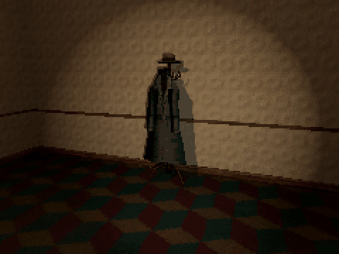

Tutorials › Make Something Move Only When the Player Looks Away
How to Make Something Move Only When the Player Looks Away in Godot 4
Something that changes only while nobody looks at it.

A thing that moves only while nobody looks at it: the player turns round, turns back, and it is nearer, or different, or gone. One script on a Node3D whose children are its states: the first shows, and each time the player has seen it and looks away, the next takes its place. It counts as seen when any of a few points on it is on screen, or just past the edge, with no wall in between.
Script: look_away_steps.gd (MIT) · Godot 4.3 or newer · its folder on GitHub
How to use it
- Put the states under one Node3D, one child each, in order (for example a coat hanging, a coat worn, a coat nearer, the stand bare).
- Add
look_away_steps.gdto that Node3D.unseen_delayis how long it must be out of sight before it moves on;pointsare the spots on it the camera checks. - Give walls collision on layer 1, and the player's body and the thing's own collision another layer, so only walls block the view.
What it needs
- A model's states as separate meshes or scenes; nothing else.
Try it free
The Silent Dread Free Sampler has Hanging Coat Illusion: its OBJ folder has the four poses (hanging, leaning, closer, gone) to put under the node.
How it was tested
In Godot 4.3 and 4.7.2: it never changes while the camera sees it (in view, half behind a wall, glimpsed at the screen's edge), moves one step per look away and only after its delay, counts a wall in the way as not seen, and stops at its last state.
The code
extends Node3D
## How to Make Something Move Only When the Player Looks Away in Godot 4
## Cordatix Godot 4 PSX tutorials, MIT licensed: https://github.com/GoldenSparrow-Dev/cordatix-godot-psx-tutorials
## The devlog: https://cordatix.itch.io/silent-dread/devlog/1726836/how-to-make-something-move-only-when-the-player-looks-away-in-godot-4-silent-dread
## Moves on to its next state only while nobody sees it. Put the states under it as children (Hanging, Leaning,
## Closer, Gone): the first one shows, and each time the player has seen it and looks away for unseen_delay seconds,
## the next one takes its place. Walls have collision on layer 1; the player's body and the thing's own on another.
## Seconds out of sight before it moves on.
@export var unseen_delay := 0.75
## How far past the screen's edges still counts as in view (a share of the screen): the corner of the eye.
@export var margin := 0.08
## Points on the thing, in its own space: if the camera can see any of them, it is seen.
@export var points := PackedVector3Array([Vector3(0, 0.2, 0), Vector3(0, 1.0, 0), Vector3(0, 1.7, 0),
Vector3(0.3, 1.0, 0), Vector3(-0.3, 1.0, 0)])
var step := 0
var _unseen_for := 0.0
var _seen_this_state := false # a change the player never saw would be wasted
func _ready() -> void:
for i in get_child_count():
get_child(i).visible = i == 0
func seen() -> bool:
var cam := get_viewport().get_camera_3d()
if cam == null:
return true # nobody can tell, so nothing may change
var size := get_viewport().get_visible_rect().size
var space := get_world_3d().direct_space_state
for p in points:
var w := global_transform * p
if cam.is_position_behind(w):
continue
var s := cam.unproject_position(w)
if s.x < -size.x * margin or s.y < -size.y * margin \
or s.x > size.x * (1.0 + margin) or s.y > size.y * (1.0 + margin):
continue # off screen
var hit := space.intersect_ray(PhysicsRayQueryParameters3D.create(cam.global_position, w, 1))
if hit.is_empty():
return true # on screen, and nothing in the way
return false
func _physics_process(delta: float) -> void:
if seen():
_seen_this_state = true
_unseen_for = 0.0
return
_unseen_for += delta
if _seen_this_state and _unseen_for >= unseen_delay and step < get_child_count() - 1:
get_child(step).visible = false
step += 1
get_child(step).visible = true
_seen_this_state = false
The devlog and the pack
The step-by-step walkthrough is the devlog How to Make Something Move Only When the Player Looks Away in Godot 4 (Silent Dread) on itch.io, written for Silent Dread, a PS1-style asset pack by Cordatix for Godot 4, Unity, Unreal and Blender.